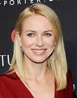
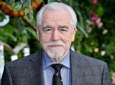
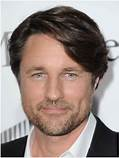
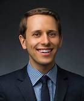
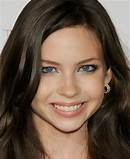
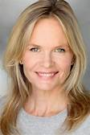
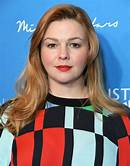
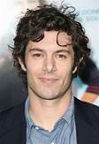

Naomi Ellen Watts:Atriz, Produtora Executiva, Produtora, Nacionalidade:Britânica-Australiana, Nascimento 28 de setembro de 1968 (Shoreham, Inglaterra)Idade 53 anos.Watts ganhou aclamação da crítica por seu trabalho no filme de suspense psicológico Cidade dos Sonhos de 2001, de David Lynch. No ano seguinte, recebeu o reconhecimento público pela participação na série de filmes de terror e suspense O Chamado. Ela recebeu indicações para o Oscar de melhor atriz e pelo Screen Actors Guild para melhor performance de uma atriz num papel principal por sua interpretação de Cristina Peck no drama de Alejandro González Iñárritu, 21 Gramas, de 2003. Outros papéis notáveis incluem o remake de King Kong de 2005, o filme policial Eastern Promises de 2007, e o suspense The International, de 2009. Em 2010, Watts retratou Valerie Plame Wilson no drama biográfico Fair Game. Por seu papel no drama espanhol O Impossível, sobre o tsunami na Ásia em 2004, ela recebeu sua segunda indicação ao Oscar de melhor atriz principal na cerimônia do Oscar 2013.
Papel: Rachel Keleer

Voltar para o início
Brian Cox:Ator, Diretor, Diretor de fotografia, Nascimento 1 de junho de 1946. É um ator escocês, Ele trabalhou extensivamente com a Royal Shakespeare Company e o Royal National Theatre , onde ganhou reconhecimento por sua interpretação do Rei Lear. Ele desempenhou papéis coadjuvantes em Rob Roy (1995) e Coração Valente (1995), vencedor do Oscar de Mel Gibson. Ele foi o primeiro ator a retratar Hannibal Lecter no filme em Manhunter (1986). Vencedor de dois Olivier Awards, um Primetime Emmy Award e um Golden Globe Award, ele também foi indicado para umBritish Academy Television Award e três Screen Actors Guild Awards. Em 2003, ele foi nomeado para a Ordem do Império Britânico no posto de Comandante. (Dundee, Escócia, Reino Unido)Idade 76 anos
Papel: Richard Morgan

Voltar para o início
Martin Henderson: Ator, Nacionalidade Neo-zelandês, Nascimento 8 de outubro de 1974.É conhecido por interpretar Noah Miller no filme de terror The Ring (2002). Em 2011 foi eleito o 6° ator mais sexy do mundo. (Auckland, Nova Zelândia)Idade 47 anos
Papel: Noah

Voltar para o início
David Dorfiman: Ator, Produtor, Nacionalidade Americano,Idade 29 anos.é um advogado americano e ex-ator. Ele interpretou Aidan Keller no remake do filme de terror de 2002 The Ring, e sua sequência de 2005 The Ring Two. Seus outros papéis no cinema incluem Sammy em Panic, Joey em Bounce e Jedidiah Hewitt em The Texas Chainsaw Massacre. Ele também retratou Charles Wallace Murry na versão cinematográfica de A Wrinkle in Time. Em 2008, Dorfman apareceu no filme Drillbit Taylor. Ele foi escalado ao lado de Thomas Haden Church em Zombie Roadkill, e apareceu como um soldado dos Lannisters no episódio da sétima temporada de Game of Thrones " Dragonstone ".
Papel: Aidar

Voltar para o início
Daveigh Chase: Atriz, Nacionalidade Americana, Nascimento 24 de julho de 1990,Idade 31 anos.Daveigh Elizabeth Chase VAY née Chase-Schwallier é uma atriz, cantora e modelo americana. Ela começou sua carreira aparecendo em pequenos papéis na televisão antes de ser escalada como Samantha Darko no filme cult de Richard Kelly, Donnie Darko . Ela posteriormente forneceria as vozes de Chihiro Ogino na dublagem em inglês do filme Spirited Away do Studio Ghibli, e Lilo Pelekai no filme de animação da Disney Lilo & Stitch esua franquia subsequente, antes de aparecer como Samara Morgan , a antagonista infantil no filme de terror de 2002 The Ring .Entre 2006 e 2011, ela desempenhou um papel coadjuvante na série da HBO Big Love, interpretando Rhonda Volmer, uma adolescente sociopata criada em uma família polígama. Em 2009, ela reprisou seu papel como Samantha Darko em S. Darko , uma sequência de Donnie Darko . Ela apareceu no filme de terror de 2016 Jack Goes Home .
Papel: Samara

Voltar para o início
Lindsay Frost: Atriz, Nacionalidade Americana.Frost desempenhou o papel de Betsy Stewart Andropoulos na novela diurna As the World Turns de 1984 a 1988. Ela também interpretou a Dra. Jessie Lane no drama Birdland, Sargento Helen Sullivan no drama criminal High Incident , Fay Pernovick no drama Nightmare Cafe, e Claire Stark no drama criminal Shark .Ela apareceu em Crossing Jordan no papel recorrente de Maggie de 2001 a 2006. Nos últimos anos, ela também estrelou várias séries, incluindo Lost, Boston Legal, Shark , CSI: Crime Scene Investigation , CSI: Miami e Frasier .Ela também apareceu nos filmes cult Dead Heat (1988), como Randi James e The Ring (2002), como Ruth Embry.Na Broadway, Frost apareceu em M.Butterfly (1988).
Papel: Ruth

Voltar para o início
Amber tamblyn: Atriz, Autora, Diretora, Nacionalidade Americana, Idade 39 anos.é uma escritora, diretora e atriz americana. Ela chamou a atenção nacional pela primeira vez em seu papel na novela General Hospital como Emily Quartermaine aos 11 anos. ela recebeu indicações ao Primetime Emmy e ao Globo de Ouro. Seu trabalho no cinema inclui papéis como Tibby Rollins dos dois primeiros The Sisterhood of the Traveling Pants e Megan McBride em 127 Hours (2010), bem como o filme aclamado pela crítica,Stephanie Daley ao lado de Tilda Swinton , que estreou no Festival de Cinema de Sundance e pelo qual Tamblyn ganhou Melhor Atriz no Festival Internacional de Cinema de Locarno e foi indicado ao Independent Spirit Award . Em 2021, ela estrelou ao lado de Diane Lane em "Y The Last Man", da FX. Tamblyn é um autor publicado e crítico cultural em geral. Ela publicou sete livros em vários gêneros e escreve para o The New York Times e outras publicações sobre questões de desigualdade de gênero e raiva das mulheres.
Papel: Katie

Voltar para o início
Adam Brody: Ator, Produtor Executivo, Nacionalidade Americano, Nascimento 15 de dezembro de 1979 (De San Diego, Califórnia, EUA) é um ator norte-americano mais conhecido por interpretar Seth Cohen na série The O.C.Brody apareceu nos filmes Sr. e Sra. Smith (2005), Obrigado por Fumar (2006), Na Terra das Mulheres (2007), Jennifer's Body (2009), Cop Out (2010), Scream 4 (2011), Lovelace (2013), Life Partners (2014), Sleeping with Other People (2015), StartUp (2016) e Shazam! (2019).Idade 42 anos.
Papel: Male Teen

Voltar para o início
Para voltar a pagina anterior clique aqui